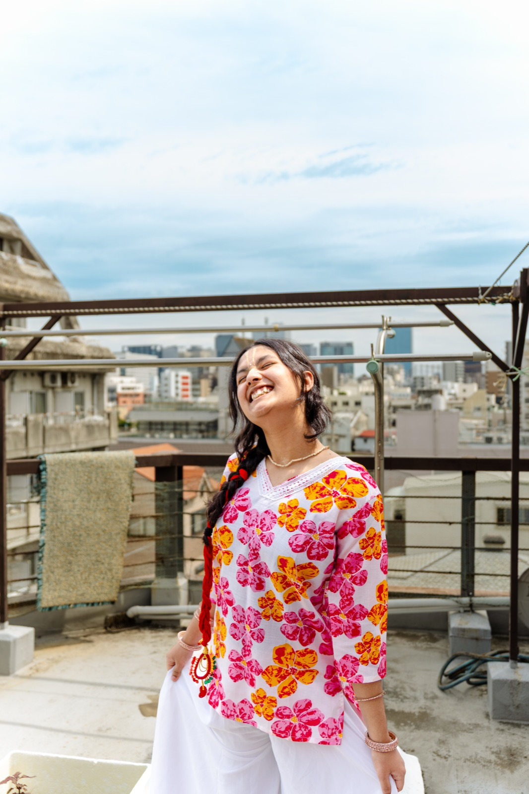
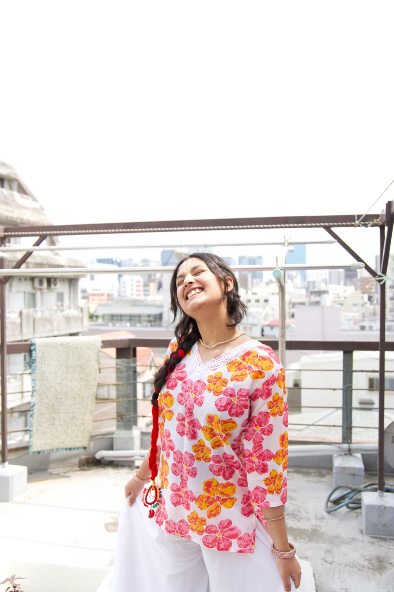
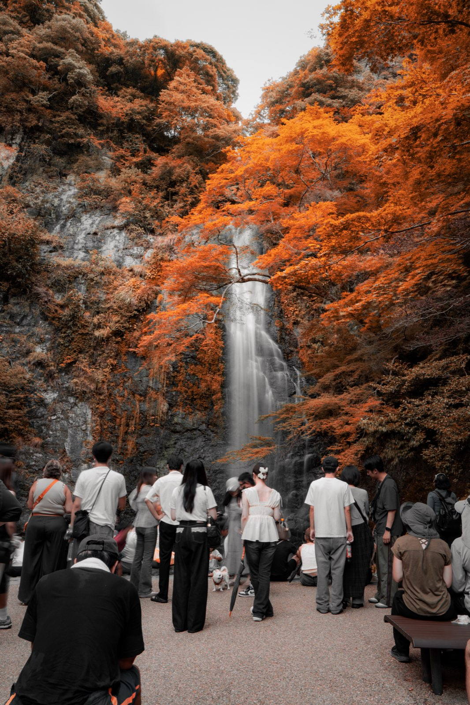
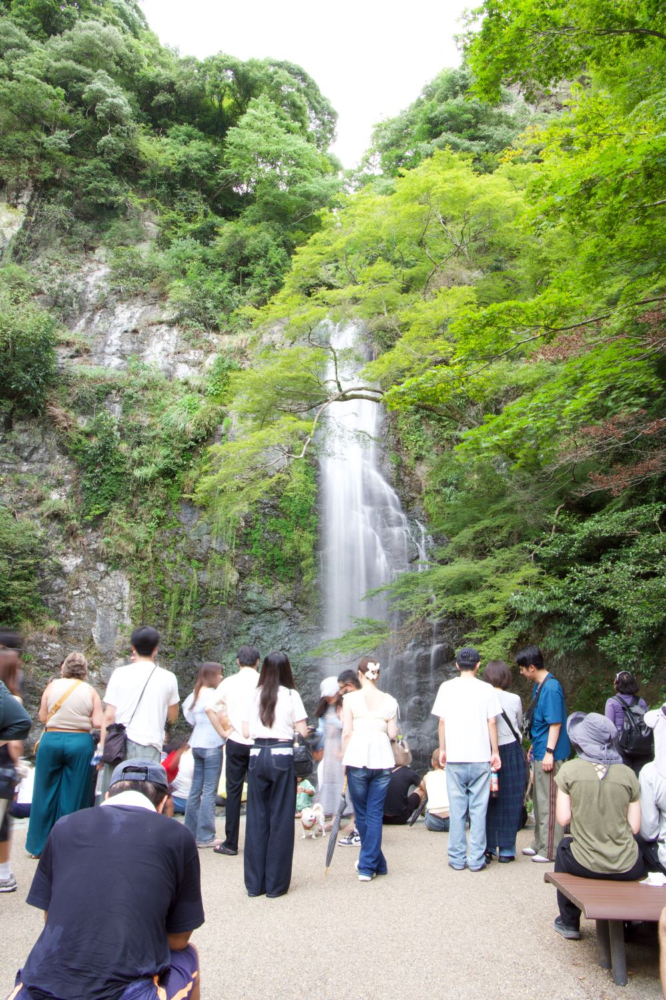
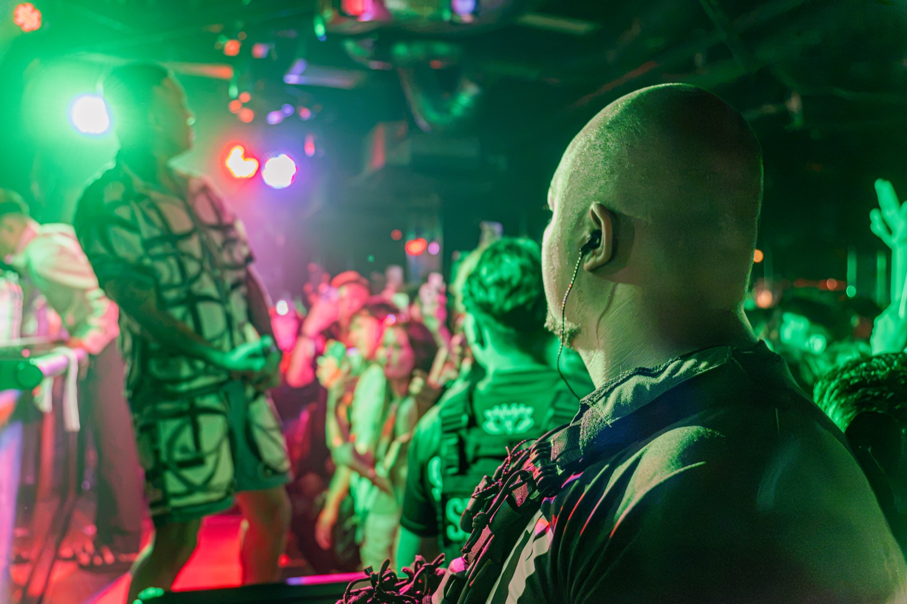

Six signature looks built from my real workflow — one click gets you 80% there.
Each preset is built from my actual editing workflow. Drag the sliders to see the exact before & after — one click gets you 80% there.
Deep navy shadows and warm spotlight glow with cinematic contrast — built for live music and dramatic stage moments.


Hover to preview PortraitSoft, clean daylight with lifted whites and gentle pastel tones — perfect for overcast rooftop and lifestyle portraits.
Vivid blue skies and sun-warmed skin with punchy summer contrast — made for beach, coast, and bright outdoor days.
Warm golden-hour glow with rich greens and cinematic city-dusk tones — for evening outdoor portraits.


Hover to preview TravelRich autumn oranges against deep forest greens with crisp teal-orange contrast — built for travel and nature landscapes.

Hover to preview NightlifePunchy neon reds and greens over deep low-light contrast — for nightlife, gigs, and club energy.
All 6 Presets in One Download
Everything above in one download. Includes future updates as I refine and add new presets.
All presets work with Lightroom. Instructions and install guide included with every purchase.